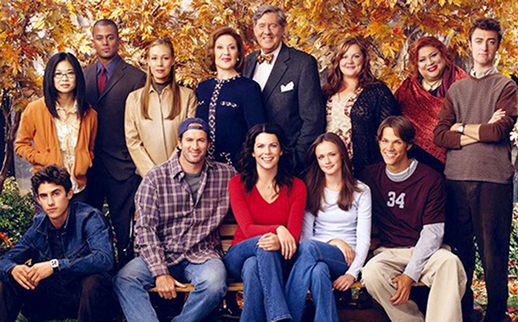

Sobre a Série
“Gilmore Girls” é uma série de televisão norte-americana dos anos 2000, criada pelo casal Amy Sherman-Palladino e Daniel Palladino. A série - que se passa em Stars Hollow, uma pequena cidade fictítica em Connecticut - retrata o dia-a-dia e a relação entre mãe e filha de Lorelai Gilmore e Rory Gilmore, além de contar com núcleos de personagens secundários bem peculiares. Ela explora questões familiares, românticas, de amizade, educacionais e sociais, além das experiências individuais de diferentes fases da vida que são proporcionadas por cada um dos personagens do núcleo principal.
As protagonistas - Lorelai e Rory - dividem com o público da série todos os dilemas possíveis, mas são eles que nos fazem criar tantas conexões com elas. Rory sendo uma menina culta e estudiosa, que mira em objetivos altos (como ser uma grande jornalista formada em uma Ivy League), mas ao mesmo tempo sonhadora e apaixonada (como grande parte das adolescentes) remete ao nosso primeiro contato com a criação de responsabilidades, confusão de sentimentos, primeiros relacionamentos e a personagem foi (e é até hoje) um modelo para as jovens. Lorelai, uma mãe que teve sua filha na adolescência mas que não queria depender dos pais nos traz uma perspectiva de mais resiliência e independência, mas sem deixar o bom humor de lado e de valorizar as amizades que a apoiam ao longo da série.

Indo muito além das referências a livros e cultura pop e de uma estética aconchegante que faz a série se tornar o “confort show” de todos que assistem, o foco principal é a jornada das protagonistas e de todos os outros personagens, mostrando ao longo de 7 temporadas que o crescimento é inevitável, e que o caminho raramente é constante e progressivo, mas que os altos e baixos nos fazem evoluir como pessoas e obter diferentes perspectivas sobre a vida.